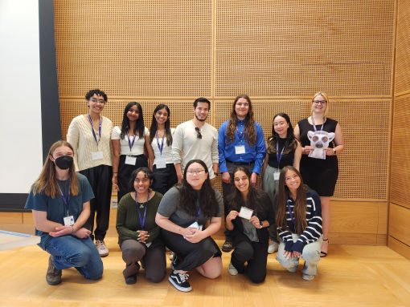
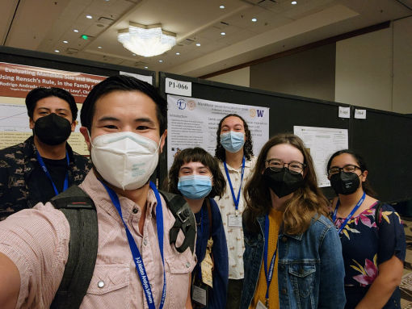
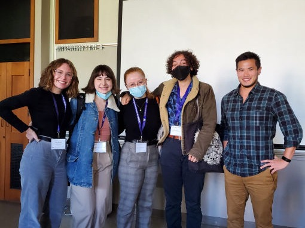

Project: Primate brain evolution
I am an undergraduate at the University of Washington majoring in Neuroscience and minoring in Chemistry and Korean. I’m passionate about research and evolution, specifically of the nervous system.
Project: Leporid ecomorphology & evolution
I’m an undergraduate student at the University of Washington studying biology, with a focus on ecology, evolution, and conservation. I like to get outside to hike and rock climb in my free time.
Project: Primate brain evolution
I’m a senior at Seattle Pacific University majoring in Ecology and Honors with minors in Chemistry and Biological Anthropology. I’m interested in continuing studying evolution and ecomorphology, and enjoy playing bass in my free time.
Project: Sexual dimorphism in skull biomechanics
I am an undergraduate student at the University of Washington pursuing a degree in Bioengineering. I am interested in the evolution of mammals and what it can tell us about the most optimal way to mimic their movements in robotics. Outside of research and classes, I enjoy doing origami and wandering around UW’s campus.
Project: Mustelid mandibular ecomorphology
I am an undergraduate student at the University of Washington, and I am majoring in psychology with a minor in global health. My interests are in animal behavior and conservation. In my free time, I love to read and hike.
Project: Leporid ecomorphology & evolution
I’m an undergraduate student at the University of Washington studying Medical Anthropology & Global Health and Biology. My current interests are evolutionary biology and the impacts of cultural perceptions of illness on health outcomes. In my free time, I enjoy reading books and being an old lady at heart.
Project: Primate skull diversity
I'm an undergraduate student at University of Washington studying Biology and Informatics. During my free time, I like to sing, listen to music, travel, go on walks, and be around friends!
Project: Primate skull diversity
I am an undergraduate student at the University of Washington and plan on majoring in MCD Biology. I am passionate about evolutionary biology and am currently interested in the growing significance of research in advancing medical practices. Outside of school, I like to dance and read.
Projects: Leporid body shape evolution
Project: Carnivoran mandibular diversity
I am a Senior at the University of Washington majoring in Public Health: Global Health. I am passionate about epidemiology, climate change, women’s reproductive health, and biology.
Project: Primate skull diversity
I am a recent graduate from of the University of Washington with my BSc. in General Biology. I am interested in evolutionary biology, specifically quantifying morphological features and data analysis. I’m currently in my gap year with plans to apply to medical school. I enjoy spending my free time going on hikes, doing pottery, and reading!
Project: Carnivoran mandibular diversity
Project: Leporid body shape evolution
Project: Leporid limb morphology evolution
Projects: Evolution of body shape and limb diversity in Sciuridae
I am an undergraduate student at the University of Washington, and I plan on majoring in biology and minoring in environmental science and resource management. I am interested in animal morphology, conservation, and behavior.
Projects: Gliding towards an understanding of the origin of flight in bats
I’m an undergraduate student at the University of Washington and I'm interested in ecology, evolution, and conservation biology. In my free time, I enjoy reading, running, and hiking.
Project: Sexual dimorphism bobcat skulls
I am a senior at the University of Washington majoring Biology with a focus in Ecology, Evolution, and Conservation. I am specifically interested in animal behavior and topics exploring predator and prey interactions.
Project: Carnivoran mandibular diversity
I am a senior at Smith College majoring in Biological Sciences with a minor in Landscape Studies. My interest in evolutionary biology has led me to museum specimen research investigating questions of taxonomy and ecological adaptation. I plan to pursue post-graduate study in ecology and evolutionary biology.
Project: Sexual dimorphism in felid jaw morphology
I’m a student at Angelo State University majoring in biology with a minor in geoscience. My interests are in mammalogy and conservation. I love doing field work, playing tennis, and exploring new places.
Project: Mustelid mandibular ecomorphology
I am an undergraduate at the University of Texas at Austin majoring in Biology with a certificate in Pre-Health Professions. I am mainly interested in evolution and animal behavior. In my free time, I like to read and explore Austin.
Project: Sexual dimorphism in carnivoran jaw morphology
I am an undergraduate at Smith College majoring in Biological Sciences (Genetics, Evolution, and Molecular Biosciences Track), along with a Five College Certificate in Ethnomusicology. I am mainly interested in genetics, evolution, and bioinformatics.
Project: Evolution of body shape and limb diversity in Sciuridae
I am a recent graduate of the University of Washington majoring in Marine Biology and minoring in Quantitative Science. I’m interested in using morphology and evolutionary biology and to understand why animals look the way they do.
Project: Mustelid mandibular ecomorphology
I’m an undergraduate at UT majoring in Environmental Science with a certificate in Applied Statistical Modeling. I’m passionate about cetaceans & their conservation, coral reef ecology, and using data science to solve complex environmental & ecological issues.
Project: Sexual dimorphism in felid jaw morphology
I’m an undergraduate student at Wesleyan University majoring in Biology and Earth & Environmental Science. My interests are macroevolutionary trends in vertebrate skeletal system. I enjoy collections work and spend my free time volunteering in natural history museums.
Project: Sexual dimorphism in canid jaw morphology
I am a student at UW pursuing a double degree in Environmental Science and Resource Management & Environmental Studies with a minor in Quantitative Science. I am interested in evolutionary biology, marine ecology, data analysis, and plants.
Project: Sexual dimorphism in canid jaw morphology
I’m currently a senior at the University of Washington majoring in Biology (Physiology) with a minor in Global Health. I’m interested in evolutionary biology, public health, and pathobiology!
Project: “Evolution of body shape diversity in Sciuridae”
I am an undergraduate student at the University of Washington working towards a B.S. in Environmental Science and Terrestrial Resource Management under the Wildlife Conservation specialty. I am interested in evolution biology and wildlife ecology research.
Project: “Effects of morphology on species range size”
I’m interested in using information about extant species to better inform our understanding of the past. I am currently pursuing a bachelors degree in Earth Science at Columbia University and am hoping to continue into a PhD program.
Project: "Quantifying kinematics of sea otter tool use behavior"
I’m interested in wildlife conservation and studying environmental patterns. My goals are to work with an organization that has an expertise in human geographies affect on the natural environment.
Project: "Measuring the physical performance of southern alligator lizards in a changing climate"

Project: "Small mammal population survey of Younger Lagoon Natural Reserve"
Project: "Population dynamics of small mammals at UC Santa Cruz FERP"
Project: “Effects of Diet on the Scaling of Bite Forces in Musteloidea”
My name is Ekai Richards and I have recently graduated from UCSC with a Marine Biology B.S. and Education minor. I am currently working on using collected data from dry skull methods on a variety of Musteloidea to determine evolutionary allometric relationships between different dietary groups and bite force. Additionally I am working on receiving my scientific diving certification to further my capabilities as a researcher. While plans remain uncertain I wish to continue to expand my skills as both a researcher and educator to be able to help teach future marine scientists.
Project: “Differentiation of craniomandibular morphology in two sympatric Peromyscus mice (Cricetidae:
Rodentia)”
I recently completed my undergraduate at UC Santa Cruz, with a degree in Ecology and Evolution. Previously, I have worked at the California Academy of Sciences under Dr. Richard Mooi studying the morphology, ontogeny, and evolution of ophicephalous pedicellariae in clypeasteroid sea urchins. In the Mehta lab, I am working on a phylogeny of amphibious fishes in order to character map elongation onto the phylogeny. The goal of this project is to see what morphological adaptations coincide with colonization events. I am very interested in systematics and functional morphology, and am currently in the process of applying to graduate school in order to continue with research.
Shohei is interested in animal physiology/morphology and has extraordinary plans to become a wildlife veterinarian once he graduates and attends vet school. He is the MSI instructor for Bio 20B and has done independent research projects in both Costa Rica and Corsica, France. He’s currently working with Chris Law on estimating bite forces in the Musteloidea super family – they hope use molecular data from Genbank and morphometric data from numerous skull collections to correlate and reconstruct certain phylogenies within Musteloidea. In his free time, Shohei loves to surf, SCUBA dive, backpack, and write bios in the third person! He can be further contacted at shoheiburns@gmail.com.

AI Website Generator